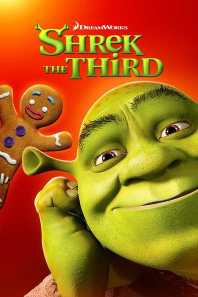
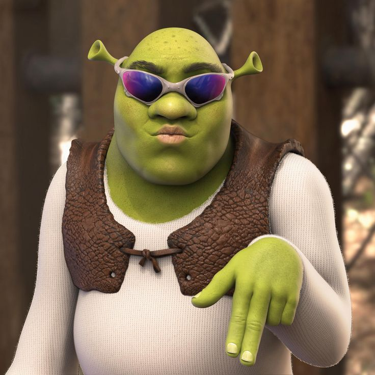
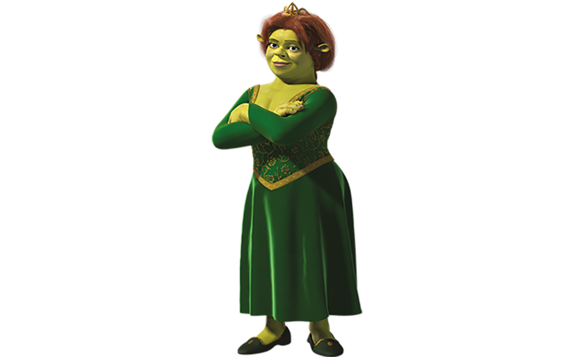
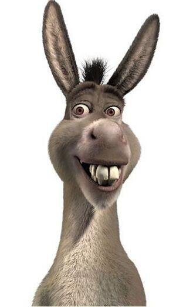
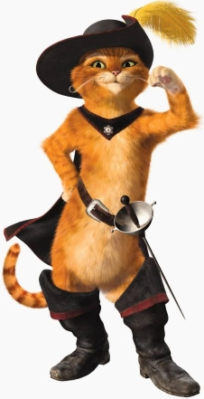

Plot
Shrek the Third (also known as Shrek 3) is a 2007 American computer-animated comedy film loosely based on the 1990 children's picture book Shrek! by William Steig. In the film, Prince Charming is plotting to overthrow Shrek and Fiona, who have inherited the throne following King Harold's death. Shrek has no interest in ruling the kingdom and attempts to convince Fiona's underachieving 16-year-old cousin Artie to reign instead. Shrek the Third premiered at the Mann Village Theatre, Westwood in Los Angeles on May 6, 2007, and was theatrically released in the United States by Paramount Pictures on May 18, 2007. Despite mixed reviews, the film was a commercial success, grossing $813 million worldwide on a budget of $160 million, becoming the fourth highest-grossing film of 2007. It was nominated for the Best Animated Film at the 61st British Academy Film Awards. The sequel, Shrek Forever After, was released in May 2010.
Following the success of Shrek 2, the third and fourth Shrek films, along with plans for a final, fifth film, were announced in May 2004 by Jeffrey Katzenberg: "Shrek 3 and 4 are going to reveal other unanswered questions and, finally, in the last chapter, we will understand how Shrek came to be in that swamp, when we meet him in the first movie." The film was developed under the working title of Shrek 3. By March 2006, the title of the film was changed to Shrek the Third. According to Miller, the reason behind the title change was because they "didn't want to just sort of title it like it was just a sequel," instead they wanted "something to make it stand on its own, give it its own personality and really try to treat it as a chapter in Shrek's life." Hui also remarked: "It's about Shrek becoming the new king of Far Far Away; the title sounds kind of royal as well." The film was originally going to be released in November 2006; however, in December 2004, the date was changed to May 2007; "The sheer magnitude of the Shrek franchise has led us to conclude that a May release date, with a DVD release around the holiday season, will enable us to best maximize performance and increase profitability, thereby generating enhanced asset value and better returns for our shareholders." Katzenberg explained
| Main Characters | |
|---|---|
| shrek |  |
| Fiona |  |
| Donkey |  |
| Puss in Boots |  |